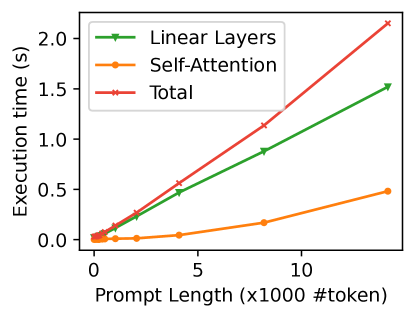
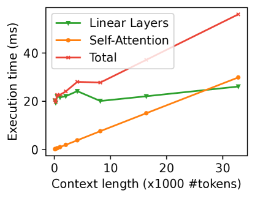
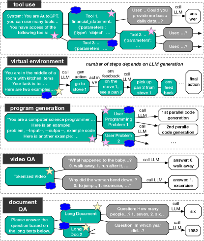
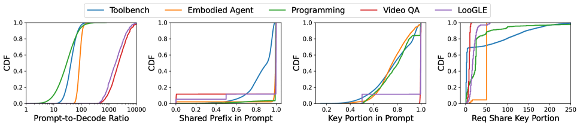
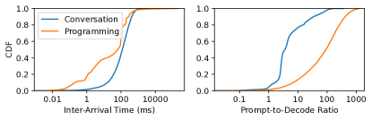
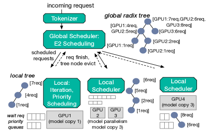
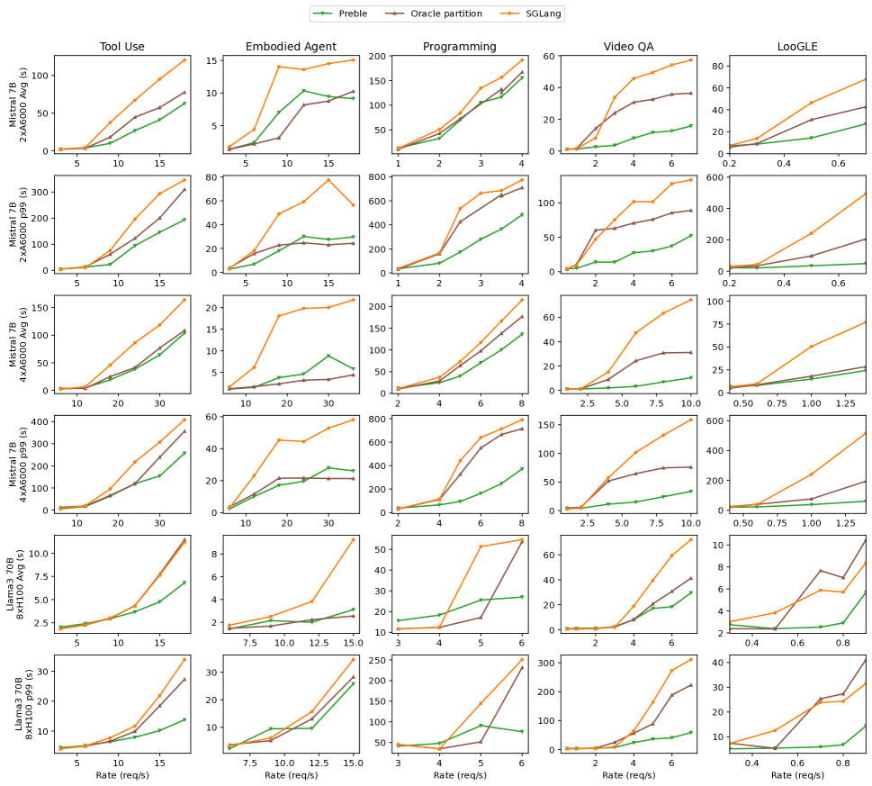
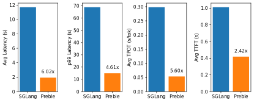
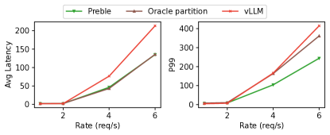
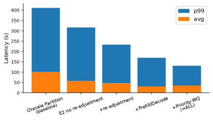

Preble: Efficient Distributed Prompt Scheduling for LLM Serving
Abstract
Prompts to large language models (LLMs) have evolved beyond simple user questions. For LLMs to solve complex problems, today’s practices are to include domain-specific instructions, illustration of tool usages, and long context such as textbook chapters in prompts. As such, many parts of prompts are repetitive across requests, and their attention computation results can be reused. However, today’s LLM serving systems treat every request in isolation, missing the opportunity of computation reuse.
This paper proposes Preble, the first distributed LLM serving platform that targets and optimizes for prompt sharing. We perform a study on five popular LLM workloads. Based on our study results, we designed a distributed scheduling system that co-optimizes computation reuse and load balancing. Our evaluation of Preble on two to 8 GPUs with real workloads and request arrival patterns on two open-source LLM models shows that Preble outperforms the state of the art avg latency by 1.5 to 14.5 and p99 by 2 to 10.
1 Introduction
Transformer-based Large Language Models (LLMs) [48] have evolved into a vital solution in many problem spaces, including question-and-answer, chatbots, document understanding, etc [34, 41, 63]. Recently, new capabilities and use cases of LLMs create two common features not seen in traditional LLM usages. First, prompts to LLMs are significantly longer than generated sequences. For example, questions about a long document [22] or a video clip [56] are answered by LLMs with short answers. As another example, detailed instructions and illustrations for LLMs are vital in accomplishing complex tasks like solving advanced math problems [58]. Long prompts with short generations imply that the model forwarding computation of prompts (called the prefill phase) significantly outweighs the computation of new token generation (called the decoding phase). Thus, improving the prefill phase performance is crucial to the overall performance of LLM serving systems.
Second, prompts are partially shared across requests. For example, a long document or video is often queried many times with different questions [22]; different requests using the same tools share tool instructions in tool-augmented LLMs [13]; chain- or tree-structured prompting calls an LLM in steps, with each subsequent step reusing context from previous steps [58, 62, 57]. When sharing happens at the beginning of prompts or can be reordered to happen at the beginning (i.e., prefixes), the intermediate results during the attention computation (called keys and values, or KVs) can be reused across different prompts [64].
Despite the increasing popularity, no existing works have addressed the problem of distributed LLM serving in the context of long and shared prompts. Today’s distributed serving systems treat each request as an independent computing unit when performing data- or model-parallel model inference. They compute each request’s prompt in full, even if some or all of it has been computed before for another request. As such, they schedule requests as a stateless process.
To reuse the computation of shared prompt prefixes, we should treat distributed serving in a stateful way. However, traditional stateful distributed systems such as distributed caching [9, 39] and stateful serverless computing [20, 46, 12] do not work well for LLM serving, as LLM serving introduces three new challenges. First, traditional distributed systems usually keep computation and state in separate pools, allowing computation and data to be placed independently. LLM inference requires attention computation to directly access state (e.g., KVs) on the same GPUs. This implies that LLM serving is constrained on computation and state placement and must consider them together when scheduling.
Second, any parts of a storage object (e.g., a file or a database table) can be cached in traditional caching systems, and different cached parts can spread across servers. In LLM serving, only matched prefixes can be shared and thus worth caching, because token positions in prompts are encoded together with the tokens [48]. Meanwhile, the entire prefix must be on the same GPU for attention computation to run efficient matrix multiplication. This prefix property constrains how request states can be placed.
Third, although different LLM prompts can be statically put together to form a sharing-based prefix tree, balancing the load in an online system is far more complex than static partitioning in traditional tree- or graph-based systems. This is because both the prefix tree structure and per-tree-node load in an online LLM cluster change quickly with request arrival and exit. Moreover, an LLM serving system’s performance is not purely dependent on request load but also factors like prefill-decoding imbalance [4, 3, 65].
Solving the above challenges perfectly is equivalent to a multi-constrained graph partitioning problem, which is NP hard [10]. Moreover, because of the quickly changing nature of LLM prefix trees, such a partitioning problem must be solved repeatedly, causing performance overhead beyond what LLM serving systems can accept.
To find a more practical solution, we first perform a comprehensive study of five real LLM workloads and a data-center LLM request trace to understand prompt and request load features. Overall, we find that prompts are 37 to 2494 longer than generated sequences, and 85% to 97% tokens in a prompt are shared with other prompts. Additionally, most requests have a major portion of their prompts with different sharing features from its predecessors and is longer than its predecessors’ total length; we call this portion key portion. Real-world LLM requests also have longer prompts than outputs, and requests arrive at varying speeds over time and across LLM usages. Finally, by understanding transformer’s computing nature and profiling real GPU performance, we find that prefill time and decoding time are proportional to their corresponding token lengths.
Based on our findings, we propose a distributed LLM request scheduling algorithm called E2 (standing for Exploitation + Exploration) that dynamically adapts request and state (prefix) scheduling based on GPU load and prompt-sharing features. E2 allows computed prompt prefixes to be exploited (i.e., reused) by other requests on the same GPU but also gives chances for a prefix to explore other GPUs. E2 chooses exploitation when the amount of recomputation saved (proportional to the number of shared prefix tokens) is larger than that of new computation (proportional to the remaining non-shared tokens). Otherwise, if the shared prefix is shorter than the remaining tokens, E2 chooses exploration. For exploitation, we send the request to the GPU that caches the key portion of the prefix (or the lightest GPU if there are multiple such GPUs) to exploit it. For exploration, E2 considers all GPUs in the cluster to pick the best for the prompt based on a load cost calculation. Instead of an NP-hard formulation that considers all prefix tree nodes, E2’s greedy-based scheduling policies focus on optimizing the key portion, reducing the complexity and making E2 scalable.
When E2 decides to explore GPUs, it calculates a load cost for each GPU that captures longer-term GPU load and request-specific load cost. The first part of the load cost is a GPU’s anticipated load when running the currently scheduled request and shortly following that time. This anticipated load factors in the longer-term effect of a placed prefix being exploited by future requests. We use recently scheduled requests on this GPU as the history for this load estimation by adding their non-cached prompt prefill time and decoding time. The second part is the load regarding recomputation the GPU needs to evict to make memory space to run the current request. The third part is the cost of running the current request on the GPU. We can calculate all three parts of load cost based on token count, sharing features, and request count, thanks to transformer’s regular computation patterns.
Centered around the E2 scheduling algorithm, we build Preble, a distributed LLM serving system that aims to provide high serving throughput and low request average and tail latency for long and sharing prompts. Preble consists of a global, request-level scheduler and a per-GPU, iteration-level scheduler. Apart from E2, Preble incorporates several novel designs to tackle practical LLM challenges. First, E2 does not change the location of a prefix after the initial assignment. However, load distribution and key portions can change over time. To mitigate this issue, Preble detects load changes and redirects requests from a heavily loaded to a light GPU. Preble also supports autoscaling by replicating a key portion and its prefix on multiple GPUs.
Second, prefill and decoding in transformer have different computation needs, as discovered by a set of recent works [4, 65, 40, 3]. However, none of these works consider prefix sharing. Our insight is that a prompt that hits a cached prefix can be treated as decoding-phase computation, while a missed prompt can be treated as prefill-phase computation because of the high prompt-to-decoding token length ratio. Thus, we direct missed requests to GPUs with heavy hit requests to balance prefill and decoding computation needs.
Finally, to increase prefix macthing while avoiding starving, we borrow ideas from traditional priority-based scheduling in operating systems [19, 49] to assign priorities to waiting requests based on their prefix cache hit ratio and give each priority their respective quota of requests to serve.
We implement Preble as a standalone layer on top of slightly modified vLLM [21], the most popular open-source LLM serving system today, and SGLang [64], a new LLM serving system that incorporates single-GPU prefix matching. We evaluated Preble using our studied five workloads and the Azure request arrival pattern [2] with the Mistral 7B LLM [17] and the Llama-3 70B LLM [28] on a four-Nvidia-A6000 GPU cluster and an eight-Nvidia-H100 GPU Cluster. Our results show that Preble outperforms SOTASGLang by 1.5-14.5 and 2-10 on average and p99 average request latency. It also outperforms a prefix-tree-partioning-based baseline by 1.15-7.5 and 1.6x-4.5x correspondingly. Overall, this paper makes the following key contributions.
-
•
The first study of LLM workloads with long and shared prompts, resulting in four key insights.
-
•
Identifying three key new challenges of distributed LLM serving under long and shared prompts.
-
•
E2, a new LLM request scheduling algorithm with the idea of exploitation and exploration integration.
-
•
Preble, the first distributed LLM serving system that targets long and shared prompts.
-
•
A comprehensive evaluation of Preble and SOTA LLM serving systems on two popular open-source LLMs, five real workloads, and two GPU clusters.
We will open source Preble upon accpetance.
2 Background and Related Works
This section presents a brief background of LLM serving and discusses related works.
2.1 Background on LLM Inference
Today’s LLMs [35, 61] are powered by the stacking layers of transformer blocks, which is composed of a memory-bound self-attention operation followed by a compute-bound linear operation [48]. The input to the model is a sequence of tokens that are converted to high-dimensional embeddings. These embeddings encode both token and positional information. Thus, if two prompts have the same subsequences but at different positions, their embeddings are not the same.


LLM inference includes two stages: prefill and decoding. The prefill stage processes the user’s prompt by performing attention computation to all prompt tokens; the computed intermediate results are called keys and values, or KVs. The decoding stage generates the output token one at a time in an autoregressive manner. Each output generation is called one iteration, and later iterations use previous iterations’ computed KV intermediate state.
The prefill and decoding stages exhibit different computation behaviors, with the former being computation-bound and the latter being memory-bandwidth bounded. To understand their behaviors and to acquire prefill/decoding computation time functions to be used by E2, we profile the prefill and decoding stage performance with Mistral 7B on the A6000 GPU. Figure 2 plots the prefill time and its breaking downs when prompt length increases. As seen, longer prompts increase prefill time, suggesting that the more savings we can get from prefix sharing, the lower prefill time will be. Moreover, since the linear layer dominates the model forwarding at the prefill stage, the prefill time is overall linear to the prompt length. Figure 2 shows the performance of a single request’s decoding performance with varying context lengths (the length of the prompt sequence plus the sequence generated thus far). We observe a similar linear relationship to context token length. Overall, these profiling results suggest that attention computation is regular. Thus, we could use the token length with a profile regression function to estimate computation time.
2.2 Decoding-Centric LLM Serving
Previous generations of LLM serving systems [29, 47, 59, 21, 25, 16] (fall 2023 or before) focused mainly on the decoding phase, with the goals of improving scheduling, memory usage, and GPU utilization, largely because the initial usages of LLMs have longer outputs than prompts. Orca [59] introduces iterative scheduling by forming a new batch at each model forwarding pass instead of at when requests finish, which allows for more efficient GPU utilization and requests to return earlier. vLLM [21] proposed the paged attention technique to reduce GPU fragmentation, thereby improving memory utilization.
To utilize multiple parallel GPUs, LLM serving systems above commonly adopt data parallelism and model parallelism, with the former spreading data requests across GPUs and the latter spreading model weights[5].
Additionally, AlpaServe [25] utilizes model parallelism for multi-model serving by colocating shards of different models on the same device and a placement algorithm that determines how many replicas of a model are needed.
Since these serving systems do not optimize the prefill stage or leverage prompt sharing, they are unfit for running our targeted workloads that have long and shared prompts.
2.3 Prompt-Aware LLM Serving
With LLMs’ usages shifting to be more prompt-heavy, recent and concurrent works have identified the different computing needs of the prefill and the decoding phases [4, 3, 65, 40]. The prefill phase processes all tokens in a prompt in one iteration, while the decoding phase generates one token in one iteration. Thus, prefill has a higher compute-to-memory ratio than decoding, especially when prompts are long. Because of this imbalance, when requests at the decoding phase and those at the prefill phase are batched together in an iteration, the former needs to wait for the latter, causing delayed output generation and inefficient GPU usage. Two approaches have been proposed to solve this problem. The first approach, called chunked prefill, chunks a prompt and runs each chunk with other decoding requests in a batch in one iteration to reduce or avoid waiting [4, 3]. The second approach is to separate prefill and decoding to different GPUs to avoid prefill-decoding interference [40, 65]. These solutions target long prompts but do not consider prompt sharing. Preble consider prompt length and sharing, and we use a novel sharing-based approach on top of chunked prefill to solve the prefill-decoding imbalance problem.
A recent work, SGLang [64], proposes to share prefixes across requests using a prefix tree. Unlike Preble, SGLang is a single-GPU solution. To run it in a distributed way, one would need to add a standard data or model parallelism layer and then run SGLang on each GPU. As no parallelism or distributed serving systems today are prompt-aware, simply distributing requests or models and then performing prefix-sharing within a GPU ignores the cluster-level prefix-sharing opportunity. Apart from distributed support for long and shared prompts (§4.2), Preble also improves memory efficiency and fairness over SGLang with a better eviction mechanism and waiting request ordering policy (§4.3). Hydragen [18] is another recent work that proposes an efficient implementation of the attention operation for shared prefixes, which is orthogonal to Preble, as Preble can support any underlying attention kernels.
2.4 Traditional Distributed Stateful Systems

Data centers have been hosting distributed stateful systems for decades, including distributed file and storage systems [38, 39, 53, 7], distributed databases [30, 37], distributed caching layers [27, 43, 6], and stateful serverless computing [20, 46]. These traditional distributed stateful systems share the same goals of balancing load and improving application performance as Preble. However, several key differences make traditional solutions unfit for LLMs.
First, traditional systems usually separate the state layer and the computation layer (e.g., an application cluster and a RAM-based storage cluster [39], serverless functions and a separate intermediate computation state layer [20]). On the contrary, LLM inference requires state (cached KVs) and computation to be on the same GPU for transformer computation to execute efficiently. Thus, a distributed LLM serving system must manage computation load and state together, as what Preble does.
Second, states in traditional systems can be modified after creation and require various consistency and coherence mechanisms to support parallelism. In LLM inference, once KVs are computed for a sequence, their values do not change. However, the sharing status can change as a future request with a prefix that matches a part of a computed sequence means that the matched part is shared and the rest is non-shared.
Third, unlike traditional systems where any part of data can be cached and shared, sharing is only useful if it happens at the prompt prefixes in LLM serving.
Finally, unlike traditional computing, whose computation and memory needs are unknown before execution, LLMs’ transformer computation is regular. Its computing and memory consumption is determined by the model size, the prompt length, and the output generation length. The model size and a request’s prompt length are known before execution, and output is generated one token per iteration. Thus, we can estimate the computing and memory consumption for every iteration. Moreover, via profiling, we can estimate the prefill time and decoding time (§2.1). Such regular computation patterns give us opportunity to pre-determine load but also brings new challenges such as prefill-decoding balancing.
3 A (Systems) Study on LLM Prompts
Today’s LLM usage goes beyond simple chatting. As LLM usage becomes more commercialized, LLM prompts become more structured and complex, outshadowing the text an LLM generates. This section presents our study results of five popular new LLM use cases: tool (or API, agent) use [44], interacting with virtual environments as an embodied agent [13, 15], software program generation [32], answering questions about videos [56], and answer questions about long documents [22]. Figure 3 demonstrates the prompt usages of these workloads. We study each case with real public datasets and understand their prompt features from a systems perspective. For datasets that do not provide outputs, we use Llama-3 7B model as the LLM to generate outputs. For each dataset, we construct a prefix tree for all the requests in the dataset (i.e., assuming an infinite prefix cache).
Table 1 and Figure 4 summarize our study results, including prompt and decoding (output) length, amount of sharing in a prompt, key portion size in a prompt, and number of requests sharing a key portion. We define the “key portion” of a request as the deepest node in a path that has more tokens than the sum of its predecessors.
To understand real-world LLM user request features, we study a recently released public cloud LLM trace. This section ends with our summary insights.
3.1 Tool Use
Today, LLMs are often augmented by various tools such as calculators and web searches. To equip a model with the ability to invoke a tool, it must be given the correct syntax for querying the tool, along with examples (or “demonstrations”) of tool use. We evaluate the Toolbench [11] dataset, which consists of more than 210k queries that call over 16k unique tools. Each query shares the same system prompt followed by tool-specific instructions. The final part of the query is the user’s specific question or task. These are all concatenated together to form the final prompt. We find that most of the sharing comes from queries that all share the same tool, and these instructions can be 43x longer than the output length. The Toolbench workload is also representative of other tasks that “prep” an LLM in a similar fashion. For example, instead of tool-calling, LLMs can have roles layered on top of the system prompt, which is popular in emerging systems that utilize the same LLM with multiple roles to create an ensemble [55, 24, 23].
| Workload | Num Req | Prompt Length | Output Length | Shared Prefix in Prompt | KeyPort. in Prompt | Req Share KeyPort. |
|---|---|---|---|---|---|---|
| Toolbench | 210415 | (1835, 742) | (43, 16) | (85%, 13%) | (76%, 16%) | (39, 64) |
| Embodied Agent | 7538 | (2285, 471) | (16, 13) | (97%, 14%) | (76%, 12%) | (48, 8) |
| Programming | 102840 | (3871, 1656) | (190, 343) | (97%, 7.4%) | (78%, 13%) | (126, 2157) |
| Video QA | 8564 | (9865, 5976) | (4, 1.5) | (88%, 32%) | (99%, 0.2%) | (8.6, 2) |
| LooGLE | 1951 | (23474, 6105) | (16, 9.9) | (91%, 24%) | (94%, 15%) | (18, 8.6) |

3.2 Embodied Agents
LLMs are increasingly found in agents that can interact with environments, such as a player in a role-playing game or controlling a robot. In this scenario, the LLM receives feedback from the environment, forms an action, and then “performs” the action. This is conducted in a loop until the model has achieved the goal. The workload we utilize is sourced from the ALFWorld [45] dataset and has 7.5k requests. Prompts first describe the environment and the task, followed by a demonstration of steps to solve the task. The model then solves its given task by looping over a planning step followed by an action step. After each action, the text-based environment returns an observation that the model incorporates into its next planning step. Every new invocation to the LLM in this loop is treated as a new request, resulting in each step sharing the context of previous steps. Interestingly, the number of steps is determined by LLM generation, creating an unpredictable sharing pattern. Because steps are chained together, prompts are still 157x longer than output tokens.
3.3 Program Generation
One of the popular uses of LLMs is to generate software programs [32]. We study the APPS competitive programming dataset [14], a dataset of programming problems. To generate better-quality programs, an approach taken by a recent paper [18] is to add a demonstration of several generic code examples before the user problem to instruct an LLM. This added demonstration is the same across all problems and becomes the system prompt. Following the system prompt is the programming problem description. Afterward, this approach invokes the LLM several times in parallel to generate multiple candidate programs, out of which the best is chosen to return to the user. As generated code is relatively long (compared to outputs of other workloads we study), the prompt-to-output ratio (20x) is relatively low. Prompt sharing comes from two places: the system prompt of code demonstration is shared across all requests, and the programming problem is shared across all parallel generations. Depending on how complex the problem is, its description could be longer or shorter than the system prompt; a problem description can also be partially the same as another problem description. Such complexity results in competitive programming having diverse key-portion properties. Such example demonstration and parallel generation technique is common in recent prompt engineering, for example, with ReAct [58], Tree-of-Thoughts [57], and Self Consistency [51].
3.4 Video Question and Answer
The advent of video models like OpenAI Sora [36] has created an explosion of interest in multi-modal models. The use of LLMs, then, goes beyond natural language. A recent usage is to answer questions about videos by tokenizing a video segment and inputting it to an LLM [60, 8]. To study this, we analyze the NExT-QA benchmark [56], which consists of 8.5K questions for 1000 video segments. Prompts to the LLM consist of a tokenized video followed by a multiple-choice question. Because of the multiple-choice nature, the outputs of this dataset only have six tokens. Long tokens for representing videos plus short outputs result in this dataset having the highest prompt-to-decoding token ratio of all workloads we explored, with nearly 2500 more prompt tokens. Apart from videos, images and audio can also be tokenized to have LLMs answer questions, and we expect them to have similar properties as video QA.
3.5 Long Document Question and Answer
With newer models, the maximum context length has increased substantially [31, 26, 16], with the latest development supporting 1M tokens [31]. Longer contexts enable new LLM applications such as asking questions about a long document or even a book. We evaluate this usage with the LooGLE dataset [22], a collection of 776 long documents and over 6.4k questions. LooGLE has a small system prompt of 13 tokens followed by a long document and then a question about the document. As a common practice, a user or multiple users often ask multiple questions to the same document, resulting in large amounts of shared tokens. Meanwhile, the answers are usually short (e.g., a true or false). These features result in high prompt-to-decode ratio and high sharing ratio in LooGLE.

3.6 LLM Usages in the Wild
To understand LLM usage in the wild, we analyze the recently released Azure LLM Inference Trace [2, 40]. The trace includes two types of LLM usages: program generation and chat conversation. It provides request arrival time, prompt length, and decode length. As it does not provide actual request content, it is not feasible for us to evaluate prompt content or sharing. Figure 5 plot our analysis results in CDF. We find that the arrival rate is approximately 5 requests per second for chat conversation and 7 requests per second for programming. On average, chat requests arrive 118 ms apart while programming requests arrive 63 ms apart. The mean prompt-to-decode ratio for chat conversations is 4. Since we have no details about shared context from follow-up conversations, this number is expected to be much lower. For the longest 20% of all chat prompts, the mean prompt-to-decode ratio is 175, which is consistent with our observations on other workloads. For programming, the mean prompt-to-decode ratio is 92 for all prompts. This falls within the range of all the workloads we evaluated.
3.7 Summary Insights
Our analysis of the five real-world LLM workloads and a real user LLM request trace reveals several key findings.
Insight 1: Contrary to popular belief, prompts are significantly longer than output lengths because LLMs support longer context and new LLM usages keep emerging. We believe this trend will continue as LLMs are augmented with more capabilities. Implication 1: Optimizing prefill computation can largely improve overall application performance, and imbalanced prefill and decoding computation features should be considered in LLM serving.
Insight 2: Prompt sharing, or reuse, is common, and the sharing amount is high. Sharing can come from different user requests needing the same tools or instructions to solve a task. It can come from a user asking multiple questions about the same document or video. Context sharing can also happen within the same user task that is solved with a chain or a tree of steps. Implication 2: Reuse computation across shared prefixes can largely improve real workloads’ performance and should be efficiently supported by distributed LLM serving systems.
Insight 3: Most requests have a portion of the prompt sequence that gets a different degree of sharing and is longer than its prefix, reflected as a key portion in prefix trees. Key portions account for the majority of prompts and are shared by a significant amount of requests. Implication 3: Identifying the key portion of prompts and optimizing the placement of requests according to their key portions is a viable way of reducing the complexity of scheduling while achieving good performance.
Insight 4: Real-world LLM usages have varying load intensity, and different usages (programming vs. conversation) have different loads. Real-world prompts are also much longer than decoding length, but different usages have different prompt-to-decode ratios. Still, the longest prompts are significantly longer. Implication 4: An efficient LLM serving system should consider complex, mixed-usage scenarios and factor in both load and prompt sharing variations.

4 Preble Design
We now present the E2 algorithm and the design of Preble, beginning with the overall system architecture of Preble, followed by its global scheduler and local scheduler designs. While Preble is oriented for long and shared prompts with relatively short output lengths, we note that Preble’s worst-case performance when there is no prompt sharing and output lengths are long is the same as traditional LLM serving systems like vLLM [21]. This is because the E2 policy degenerates to a regular load balancer.
4.1 Overall System Architecture
Preble is a distributed GPU-based LLM serving system. It supports both data parallelism and model parallelism. While its model parallelism support is standard (e.g., tensor parallelism), Preble’s scheduling of requests on parallel GPUs is designed specifically for long and shared prompts.
We propose a two-level scheduling system where a global scheduler performs request-level scheduling decisions and orchestrates the overall load balancing across GPUs, while a per-model-instance local scheduler performs iteration-level scheduling for requests assigned to the GPU. Depending on the GPU cluster topology, the global scheduler may be deployed on a separate server for multi-server GPU cluster or on the same server as a single-server-multi-GPU cluster. The local scheduler manages one model instance (multiple GPUs when using model parallelism, single GPU when not) and runs on the CPU of the same server as the GPUs.
When a new request arrives, it is first tokenized by a parallel tokenizer layer. The global scheduler then selects a GPU to assign it to based on our E2 algorithm to be discussed in 4.2. Afterward, the server with the destined GPU inserts the request into the GPU’s wait queue. For each GPU, the local scheduler running at the server performs iteration-level scheduling by forming a batch of request after each model forwarding pass, i.e., an iteration. Figure 6 illustrates the overall architecture of Preble.
This design offers several benefits: 1) by having all request scheduling go through the global scheduler, we have a centralized place to maintain global information as well as request-level per-GPU information, both being essential for E2; 2) by performing coarse-grained, request-level scheduling, a single global scheduler can scale to more GPUs, avoiding the complexity of maintaining a distributed global control plane; 3) by performing fine-grained, iteration-level scheduling for each GPU, the local scheduler can quickly adapt to GPU resource and request availability changes and make more precise decisions; and 4) the overhead of migrating a request across GPUs in the middle of its execution is relatively high. Thus, there is no need for the global scheduler to schedule or migrate requests at the iteration level.
4.2 E2 Global Scheduler
We now present our global scheduler design, which centers around the E2 distributed scheduling algorithm.
Global scheduler data structures. To achieve request-level scheduling, the global scheduler maintains several data structures. The primary data structure is global prefix trees, implemented as radix trees. Each tree has a distinct root (i.e., the beginning part of prompts). Within a tree, each tree node is a sequence of tokens in an existing request with the same sharing property, i.e., tokens in the sequence are either all uniquely used by one request or all shared by at least two requests. When inserting a new request to the tree, we match its tokens from the beginning (i.e., prefix matching) until no match exists, and we insert the remaining tokens as a new leaf node. For each tree node, we record three types of information: the number of tokens in this tree node, the set of GPUs caching the tree node (more precisely, caching the KVs for the tokens in this tree node), and the per-GPU number of requests sharing this tree node in a history window . When a tree node has no caching GPU and that there is no request within the window in the whole system sharing it, we remove it from the tree.
Per-request scheduling policy. To schedule a request, the global scheduler uses our proposed E2 scheduling algorithm, as illustrated in Algorithm 1. It first matches the request’s prompt in the global prefix trees. When the amount of recomputation saved (number of tokens in matched prefix) is larger than the amount of new computation (number of tokens in non-matched remaining prompt), we favor exploitation over exploration. With a greedy approach, E2 exploits existing cache by assigning the request to the GPU that caches the key portion (i.e., the tree node with the longest tokens) in the matched prefix. If multiple such GPUs exist, E2 chooses the GPU with the lightest request load, using the same load calculation as we will explain next.
If the matched prefix is shorter, E2 explores the best GPU to run the request based on load. While exploitation reduces latency for the current request, exploration gives E2 a chance to distribute load to different GPUs, which is the key to strike longer-term cluster execution efficiency. The exploration phase finds the GPU with the lowest “load costs”. Unlike traditional computing, whose load per request is hard to determine, transformer-based LLMs have a regular computation pattern: the computation amount of prefill and decoding are proportional to the number of prompt tokens and generated tokens. With this insight, E2 unifies three types of cost when calculating per-GPU cost, as shown in Algorithm 2.
The first cost is a GPU’s overall load for when not considering the current request, . We do not use ’s current load for two reasons: its load can be different by the time runs, and the placement of a prefix has a longer-term effect than a single load in time because of other requests’ future exploitation. Thus, we capture a recent load history on with a size of number of requests routed to the GPU. We currently statically set , which works well for our workloads and real traces. Future work could extend to be adaptive. For each request in the history, we estimate its prefill time with a regression function using the number of tokens in that do not have matched prefixes on ; we estimate its decoding time with another regression function using the average request decoding time observed on in window . These regression functions are captured from offline profiling for each GPU type. Note that the number of generated tokens is unknown until LLM finishes its generation. However, our workload study shows that the number of generated tokens is small and similar across a workload. Thus, a new request’s decoding time is likely similar to recent requests’. With this, we have .
The second cost is the potential cost to free GPU memory so that the current request can run. Given that GPUs run at capacity with our and existing serving policies [4], we expect this cost always to occur. We quantify this memory cost, , as the token load that needs to be evicted and recomputed on another GPU (thus having the same cost unit as ). Specifically, we use the eviction algorithm to be discussed in § 4.3 to find the tree nodes on that would be evicted to free the number of tokens in the current request’s prompt. For each such tree node , its eviction cost is the recomputation time of the evicted tokens for all requests currently sharing the tree node. Thus, we have where is the number of requests sharing tree node . Note that we do not include the decoding time here, as a request’s decoding time is unaffected by prefix cache eviction, and all decoding costs have already been counted in .
The third cost is the actual cost, , to run the current request on , which is simply the prefill time of the missed tokens in request . We do not count its prefill time, as it is the same across GPUs, and our goal is to compare across GPUs.
The total cost of assigning the current request to is , and we choose the GPU with the lowest total cost to assign the request to.
Post-assignment load adjustment. With the above algorithm, after the global scheduler assigns a request to a GPU, its prefix lives there until being evicted. E2’s greedy approach works well in cases where the load to a prefix is relatively stable, and the key portion of a request does not change over time. Although these properties are true most of the time for the workloads we studied, for other cases where load or key portion changes, we need a way for post-assignment adjustment.
We propose two ways of managing post-assignment load changes. The first way shifts load between GPUs and is applicable when the load surge can be handled by a single GPU. The global scheduler maintains a per-GPU load in the same way as Algorithm 2. If the most heavily loaded GPU’s load is more than times higher than the lightest GPU, it shifts load from the former to the latter until their difference is below . is configurable and can be deducted from profiling GPU and LLM types. To achieve this, we direct future requests that are supposed to exploit the heavy GPU to the light GPU instead. We do not migrate running or waiting requests as doing so involves heavy recomputation overhead and/or complicates the local scheduler. Although directing future requests does not immediately shift load, we can detect load imbalance earlier by setting a more aggressive threshold.
The second way is to auto-scale a prefix by replicating it and splitting its subtree by load when we detect that a certain prefix’s request load is still too high (average queueing time doubles over ) even after the above rebalancing. We calculate the subtree’s load using Algorithm 2.
Prefill-decoding balancing. As discussed in §2.3, LLM prefill has a larger compute-to-memory ratio than decoding, causing inefficient GPU resource utilization and performance degradation. We propose a new way of solving this prefill-decoding imbalance problem. Our insight is that a request with its entire prompt shared and cached only performs the decoding phase. Thus, it can be treated as a decoding-phase computing unit. Meanwhile, a request with a long prompt not cached and a short output length can be treated as a prefill-phase computing unit. A partially cached prompt can be treated as being between the prefill- and decoding-phase units. Thus, we can balance prefill-decoding by combining requests with more or less prompt sharing instead of or in addition to techniques like chunked prefill [4].
Specifically, when a request is about to be explored, the global scheduler first considers the prefill and decoding balancing for each GPU. If a GPU is heavily loaded with decoding-phase computing units, the global scheduler directs the current request to it, as a request to be explored will incur recomputation for prompt and is considered a prefill-phase unit. We prioritize this policy over the load-cost comparison (Algorithm 2) because a GPU with heavy decoding has unused computation capacity that we can almost freely use. The global scheduler performs the load-cost comparison if all GPUs have relatively balanced decoding-prefill loads. Apart from this prefill-decoding balancing performed at the global scheduler, our local scheduler also performs traditional chunked prefill for each GPU (§4.3).
Global scheduler scalability. The global scheduler uses a few techniques to improve its scalability. Incoming requests are first tokenized by a parallel tokenization layer. Afterward, the global scheduler spawns asynchronous request handlers to process and schedule requests. Access to the global radix tree during request handling is lock-free, as most operations are read-only. The only exceptions are updating a GPU to be assigned to a tree node and the increment of request count hitting the tree node, both of which can be expressed as atomic instructions. Additionally, the global scheduler maintains a current load for each GPU by keeping it updated every time when a new request is assigned to it or when it evicts a tree node. Thus, unlike the description of calculating , our realization of the E2 algorithm is more performance efficient. Finally, to ensure foreground request performance, the global scheduler runs non-request-scheduling tasks such as rebalancing and eviction bookkeeping in the background with separate threads.
4.3 Local Scheduler
Local scheduler mechanism. The local scheduler schedule requests the global scheduler assigns to its managed GPU(s). Similar to existing LLM serving systems [59, 21, 64, 5, 29, 47], we run one local scheduler per GPU and schedule requests at the iteration level (§2.2). Each local scheduler maintains a request wait queue, a prefix radix tree, and the number of active requests sharing each prefix tree node.
When a new request comes, the local scheduler matches it to the local prefix tree and updates the tree accordingly. It also inserts the request into the waiting queue. After each model iteration, the local scheduler forms the next batch by selecting wait requests using a priority-based algorithm to be discussed next. If a selected request has a long and non-shared prompt, we chunk the prompt similar to Sarathi [4]. If the GPU memory is not enough to run the batch, the local scheduler picks tree node(s) or part of a tree node (if a part is enough) to evict based on request accessing time (LRU). The local scheduler than informs the global scheduler about this eviction, and the latter processes it in the background.
Waiting queue request ordering. Today’s LLM serving systems schedule requests in the wait queue according to FCFS or prefix sharing (serve the request with the highest sharing amount the first). The former ignores prompt sharing and results in more recomputation; the latter ignores fairness and could result in starvation [54]. We propose a priority-based wait queue scheduling policy that considers both prefix sharing and fairness.
Specifically, we create (a configurable parameter) priority groups and assign a request to the priority group corresponding to its cached token percentage. For example, if 63 out of 100 tokens in a request’s prompt are cached on the GPU and is 10, it will be assigned priority six. When picking requests to form the next batch, the scheduler proportionally picks requests from each priority group, with the higher priority getting more requests picked than lower priority ones. For example, if 100 requests are to be selected to form a batch, the scheduler picks ten from priority group 10, nine from priority 9, etc.
5 Implementation and Evaluation Results
5.1 Implementation
We implemented Preble as a standalone layer to perform distributed LLM serving. As such, Preble can be added to any existing serving systems with no or minimal changes — we currently support vLLM [21] and SGLang [64] as two backends. Our changes to SGLang include only 50 SLOC for adding priority-based waiting queue management, which is an optional component in Preble added for better fairness. The standalone Preble consists of 911 SLOC, mainly for radix tree management, load cost calculation, and re-assignment.
5.2 Workloads and Environments
Workload setup. We use the five workloads presented in §3 to evaluate Preble. For each workload, we sample enough requests to fulfill the request-per-second (RPS) needs and GPU setup (e.g., a larger GPU or more GPUs can handle more). For experiments other than the ones using the Azure Inference Trace, we set the inter-arrival time using a Poisson distribution with a mean that corresponds to the RPS we test (X-axis in most figures). We then run the experiments until stable state is reached and lasts for a significant length.
LLMs. We use two open-source Large Language Models, the Mistral 7B-parameter model [17] and the Llama-3 70B-parameter model [28]. We choose these models as the represent a variation in size and represent a variation in architecture. Both of the models are very popular in open source.

Environments We ran all experiments in one of the two environments: a four NVidia A600 GPU cluster and an eight NVidia H100 GPU cluster. For our experiments we use Intel(R) Xeon(R) Gold 5218 CPU and run the scheduler on the same node as the gpu. However, the global scheduler can be deployed anywhere.
Baseline 1: SGLang (vLLM): Our first baseline is serving systems that support single-GPU prefix sharing, including SGLang [64] and vLLM (which recently added beta feature for prefix sharing [1]). To run SGLang and vLLM in a distributed fashion, we set up a load balancer that sends requests in a Round-Robin fashion to individual SGLang/vLLM instances ( i.e., data parallelism). As Round Robin essentially distributes requests evenly, this baseline captures a distributed serving system that balances request load and then perform prefix sharing within each parallel instance.


Baseline 2: Oracle partition: Different from partitioning requests, another way of distributing load is to partition state (i.e., prefix trees in our case). As prefix trees are dynamic, and perfect partitioning requires solving an NP-hard problem, we use an oracle approach to construct this baseline. Specifically, at offline time, we ensemble all requests in a workload in §3 into a single prefix tree, manually examine the key-portion tree layer of it, and partition the tree into (number of data-parallel instances) sub-trees by evenly splitting this layer (e.g., with the hash values of tokens). For certain workloads, no single layer is clearly or always the key portion; we then partition the tree according to the top layer that can be a key portion. Blue clouds in Figure 4 mark the tree-node layers we choose manually as the partitioning layer for this oracle baseline. Note that such oracle information cannot be acquired in a real serving system. After a tree has been partitioned, we let the online serving system consistently send requests hitting a partition to the corresponding GPU.
Metrics. We use three key metrics: request per second, which measures serving capacity; average request latency, which measures the average end-to-end request latency (including scheduling time, queueing time, prefill, and decoding time); and p99 request latency. Note that our metrics differ slightly from some existing LLM serving works [21, 59], as we do not use TPOT (time per output token) or TTFT (time to first token) as key metrics. This is because our target LLM use has few output length, rendering TPOT not as meaningful, and TTFT is close to request latency. We consider p99 latency since as all other user-facing services [7, 33], it is important to prevent high tail latency.
5.3 End-to-End Workload Performance
Single workload results. We now present our end-to-end evaluation results of Preble on the five workloads, two LLMs, and two GPU clusters, as shown in Figure 7. Overall, Preble significantly outperforms the data-parallel SGLang baseline for all the workloads, both models, and all GPU environments, as can be seen from Preble’s lower average and p99 latency, especially under higher RPS (or the other way around, for the same latency target, Preble can serve higher RPS). Our improvements over SGLang range from 1.5 to 14.5 in terms of average latency and 2 to 10 in p99 latency.
Counterintuitively, Preble is better or on par with the oracle-partition baseline for all the setups. This is because key portions cannot always be easily identified and partitioned statically and because even when a tree can be evenly partitioned by size, requests hitting each partition can be different and can change over time.
Comparing across workloads, we see bigger improvements of Preble over SGLang on the Embodied Agent, Tool, Video QA, and LooGLE workloads than the Programming workload. The Programming workload’s improvement is relatively small for two reasons: 1) its decoding length is the longest among all the workloads, and 2) there is a common long systems prompt shared across all requests in the dataset. As decoding time starts to dominate total request latency, and we do not improve decoding performance, the room for improvement for Preble is smaller. Moreover, Round-Robin request distribution on the programming workload evenly distributes the system prompt. So, all GPUs cache the system prompt, resulting in SGLang being able to achieve high prefix caching within each GPU. Nonetheless, Preble still achieves 1.56 to 1.8 in average latency and 3 to 4 in latency improvement over SGLang in the programming workload. The other four workloads have larger context lengths, smaller output lengths, and smaller shared system prompts, which enable Preble to exploit more benefits from prefix sharing.
Preble has more improvements over the Oracle baseline on the VideoQA and Programming workloads than the other three workloads. The VideoQA workload has more questions for longer videos, causing non-even distribution of request load across videos. Even though the Oracle can evenly split videos, the load is not evenly split. The Programming workload’s Oracle split is at the layer of user problem, which is not a good, stable indicator of key portion or request load. Thus, for these two workloads, Oracle performs much worse than Preble. On the other hand, the embodied agent workload’s key portion is the initial instruction, and each request has a different instruction. Thus, by splitting the initial instruction, Oracle can almost perfectly split load and cache prefixes. The Tool workload has a relatively uniform request distribution across different tool uses, allowing Oracle to partition load evenly.
Comparing across the number of GPUs, Preble’s relative improvement over the baselines stays similar when going from two to four A6000 GPUs. Considering absolute values, we see Preble successfully doubles RPS under similar latency, showing its strong scalability. When changing from A6000 to eight H100 and switching the Mistral 7B model to the Llama-3 70B model, we find relative improvement for different workloads to be different. For example, with the programming workload, the H100 setup has a much larger improvement over SGLang. On the other hand, with the Embodied Agent workload’s improvement becomes smaller, especially on p99.

Azure trace and mixed workloads. Our experiments above use a Poisson request arrival distribution (which is the same as most existing LLM works [21, 25]). To understand Preble’s performance under real-world request load, we use the request arrival times from Azure LLM Inference Trace (§3.6). However, as our GPU environment and model are different from Azure’s and Azure’s being unknown, we scale all inter-arrival time by 0.7 (42% more intensive request load) to saturate our GPU cluster. The Azure trace contains two types of uses: Code which users submit a piece of code and asks a question about it, and conversation, where users chat with the LLM. As these real user data (prompt and output) are not released by Azure, we can only try matching our workloads to them. We use our Tool workload as Azure’s Code usage, as its prompt-to-output ratio is similar to Azure Code’s, and users also ask questions in the Tool workload. We use our VideoQA workload for the conversation workload for similar reasons. Specifically, we replace the Azure trace (with an increased arrival speed). When the trace is a Code request, we randomly sample one request from our Tool workload and similarly for Conversation (VideoQA).
Figure 9 shows the evaluation results of Preble and SGLang on four metrics: average request latency, p99 request latency, TPOT (time per output token), and TTFT (time to first token). TPOT measures the output generation speed, and TTFT measures the prefill time and the queueing delay. As seen, Preble outperforms SGLang on all metrics, showing the effectiveness of Preble in a potential real-world, mixed-workload scenario.
vLLM backend results. To demonstrate Preble’s versatility with multiple LLM backends, we evaluate Preble on vLLM with the vanilla vLLM and the oracle partitioning as the baselines. We use a slightly different version of the Mistral 7B model (v0.2) for this experiment, as vLLM only supports this version. Note that vLLM recently added beta support for prefix caching, which we include in the baseline. Figure 9 plots the results of running the VideoQA workload on 2 GPUs and the Mistral 7B v0.2 model for both Preble and vLLM. Compared to SGLang as a backend, vLLM as a backend gives Preble less relative improvement for several reasons: 1) local-GPU prefix sharing is in beta version and not as performant as SGLang; 2) vLLM does not use the flash_infer kernel which makes prefix sharing more efficient; and 3) vLLM does not support chunked prefill together with prefix caching.
5.4 Deep Dive
We now provide a detailed analysis of Preble, including an ablation study and the global scheduler scalability test. Because of H100 GPU’s high cost and low availability, we run all experiments in this section with A6000 GPUs.
Ablation study. To understand where the benefits of Preble come from, we evaluate Preble byincrementally additng features presented in §4. We use the Tool workload with a Zipf-1.1 distribution to represent real-life skewed tool popularity. Other workloads and distributions benefit from a different set of techniques.
We start with using the Oracle partition. We first add the per-request E2 policy (§4.2), which results in an improvement on both average and p99 request latency because E2’s dynamic load partitioning (which benefits more for a skewed workload like this). We then add the post-assignement global rebalancing and autoscaling, which successfully balances out load even more, resulting in further improvement, especially with p99. Further adding the Prefill/Decode-aware handling results in more improvement on both average and p99, since this considers the current batch composition and is able to better utilize the GPU resources. Finally, we add the local-scheduler priority-based wait-queue scheduling (§4.3), which, as expected, improves p99 but not average, as its goal is fairness.
Global scheduler performance and scalability. We measured the maximum throughput of our system for the Toolbench dataset by running 50000 requests of tool sizes 200 and 1500(the entire dataset) and found the performance to be 634 and 245 requests per second, respectively. On the VideoQA dataset, a simpler tree structure, we can at 1500 and find the performance to be 2931 requests per second. This implies that our global scheduler can manage at least hundreds to thousands of GPUs under peak RPS for workloads similar to ours.
6 Conclusion
This paper identified the problem of distributed serving for long and sharing prompts. To solve this problem, we performed a study on five LLM workloads and one real LLM trace. We presented E2, a distributed LLM request scheduling algorithm targeting LLM usages with long and shared prompts. We built Preble, a distributed LLM serving system using the E2 algorithm. Our results show that Preble significantly improves LLM serving performance over SOTA serving systems.
References
- [1] Vllm prefix caching integration.
- [2] Azure llm inference trace 2023. https://github.com/Azure/AzurePublicDataset/blob/master/AzureLLMInferenceDataset2023.md, 2023.
- [3] Amey Agrawal, Nitin Kedia, Ashish Panwar, Jayashree Mohan, Nipun Kwatra, Bhargav S. Gulavani, Alexey Tumanov, and Ramachandran Ramjee. Taming throughput-latency tradeoff in llm inference with sarathi-serve, 2024.
- [4] Amey Agrawal, Ashish Panwar, Jayashree Mohan, Nipun Kwatra, Bhargav S Gulavani, and Ramachandran Ramjee. Sarathi: Efficient llm inference by piggybacking decodes with chunked prefills. arXiv preprint arXiv:2308.16369, 2023.
- [5] Reza Yazdani Aminabadi, Samyam Rajbhandari, Ammar Ahmad Awan, Cheng Li, Du Li, Elton Zheng, Olatunji Ruwase, Shaden Smith, Minjia Zhang, Jeff Rasley, et al. Deepspeed-inference: enabling efficient inference of transformer models at unprecedented scale. In SC22: International Conference for High Performance Computing, Networking, Storage and Analysis. IEEE, 2022.
- [6] Brian Douglas Davison. The design and evaluation of web prefetching and caching techniques. Rutgers The State University of New Jersey, School of Graduate Studies, 2002.
- [7] Giuseppe DeCandia, Deniz Hastorun, Madan Jampani, Gunavardhan Kakulapati, Avinash Lakshman, Alex Pilchin, Swaminathan Sivasubramanian, Peter Vosshall, and Werner Vogels. Dynamo: Amazon’s highly available key-value store. ACM SIGOPS operating systems review, 41(6):205–220, 2007.
- [8] Patrick Esser, Robin Rombach, and Björn Ommer. Taming transformers for high-resolution image synthesis, 2020.
- [9] Brad Fitzpatrick. Distributed Caching with Memcached. Linux Journal, 2004(124):5, 2004.
- [10] M.R. Garey, D.S. Johnson, and L. Stockmeyer. Some simplified np-complete graph problems. Theoretical Computer Science, 1(3):237–267, 1976.
- [11] Zhicheng Guo, Sijie Cheng, Hao Wang, Shihao Liang, Yujia Qin, Peng Li, Zhiyuan Liu, Maosong Sun, and Yang Liu. Stabletoolbench: Towards stable large-scale benchmarking on tool learning of large language models, 2024.
- [12] Zhiyuan Guo, Zachary Blanco, Junda Chen, Jinmou Li, Zerui Wei, Bili Dong, Ishaan Pota, Mohammad Shahrad, Harry Xu, and Yiying Zhang. Zenix: Efficient execution of bulky serverless applications, 2023.
- [13] Shibo Hao, Tianyang Liu, Zhen Wang, and Zhiting Hu. Toolkengpt: Augmenting frozen language models with massive tools via tool embeddings. arXiv preprint arXiv:2305.11554, 2023.
- [14] Dan Hendrycks, Steven Basart, Saurav Kadavath, Mantas Mazeika, Akul Arora, Ethan Guo, Collin Burns, Samir Puranik, Horace He, Dawn Song, and Jacob Steinhardt. Measuring coding challenge competence with apps. NeurIPS, 2021.
- [15] Wenlong Huang, Pieter Abbeel, Deepak Pathak, and Igor Mordatch. Language models as zero-shot planners: Extracting actionable knowledge for embodied agents, 2022.
- [16] Sam Ade Jacobs, Masahiro Tanaka, Chengming Zhang, Minjia Zhang, Shuaiwen Leon Song, Samyam Rajbhandari, and Yuxiong He. Deepspeed ulysses: System optimizations for enabling training of extreme long sequence transformer models, 2023.
- [17] Albert Q. Jiang, Alexandre Sablayrolles, Arthur Mensch, Chris Bamford, Devendra Singh Chaplot, Diego de las Casas, Florian Bressand, Gianna Lengyel, Guillaume Lample, Lucile Saulnier, Lélio Renard Lavaud, Marie-Anne Lachaux, Pierre Stock, Teven Le Scao, Thibaut Lavril, Thomas Wang, Timothée Lacroix, and William El Sayed. Mistral 7b, 2023.
- [18] Jordan Juravsky, Bradley Brown, Ryan Ehrlich, Daniel Y. Fu, Christopher Ré, and Azalia Mirhoseini. Hydragen: High-throughput llm inference with shared prefixes, 2024.
- [19] L. Kleinrock and R. Muntz. Processor sharing queueing models of mixed scheduling disciplines for time shared systems. Journal of the ACM, 19(3):464–482, July 1972.
- [20] Ana Klimovic, Yawen Wang, Patrick Stuedi, Animesh Trivedi, Jonas Pfefferle, and Christos Kozyrakis. Pocket: Elastic ephemeral storage for serverless analytics. In 13th USENIX Symposium on Operating Systems Design and Implementation (OSDI ’18), Carlsbad, CA, October 2018.
- [21] Woosuk Kwon, Zhuohan Li, Siyuan Zhuang, Ying Sheng, Lianmin Zheng, Cody Hao Yu, Joseph Gonzalez, Hao Zhang, and Ion Stoica. Efficient memory management for large language model serving with pagedattention. In Proceedings of the 29th Symposium on Operating Systems Principles, pages 611–626, 2023.
- [22] Jiaqi Li, Mengmeng Wang, Zilong Zheng, and Muhan Zhang. Loogle: Can long-context language models understand long contexts? arXiv preprint arXiv:2311.04939, 2023.
- [23] Junkai Li, Siyu Wang, Meng Zhang, Weitao Li, Yunghwei Lai, Xinhui Kang, Weizhi Ma, and Yang Liu. Agent hospital: A simulacrum of hospital with evolvable medical agents, 2024.
- [24] Junyou Li, Qin Zhang, Yangbin Yu, Qiang Fu, and Deheng Ye. More agents is all you need, 2024.
- [25] Zhuohan Li, Lianmin Zheng, Yinmin Zhong, Vincent Liu, Ying Sheng, Xin Jin, Yanping Huang, Zhifeng Chen, Hao Zhang, Joseph E Gonzalez, et al. Alpaserve: Statistical multiplexing with model parallelism for deep learning serving. arXiv preprint arXiv:2302.11665, 2023.
- [26] Hao Liu, Matei Zaharia, and Pieter Abbeel. Ring attention with blockwise transformers for near-infinite context, 2023.
- [27] memcached. High-performance Memory Object Cache. http://www.danga.com/memcached.
- [28] Meta. Meta llama 3. https://llama.meta.com/llama3/, 2024.
- [29] Xupeng Miao, Gabriele Oliaro, Zhihao Zhang, Xinhao Cheng, Zeyu Wang, Rae Ying Yee Wong, Alan Zhu, Lijie Yang, Xiaoxiang Shi, Chunan Shi, Zhuoming Chen, Daiyaan Arfeen, Reyna Abhyankar, and Zhihao Jia. Specinfer: Accelerating generative large language model serving with speculative inference and token tree verification, 2023.
- [30] MongoDB Inc. MongoDB. http://www.mongodb.org/.
- [31] Tsendsuren Munkhdalai, Manaal Faruqui, and Siddharth Gopal. Leave no context behind: Efficient infinite context transformers with infini-attention, 2024.
- [32] Erik Nijkamp, Hiroaki Hayashi, Caiming Xiong, Silvio Savarese, and Yingbo Zhou. Codegen2: Lessons for training llms on programming and natural languages, 2023.
- [33] Diego Ongaro, Stephen M. Rumble, Ryan Stutsman, John Ousterhout, and Mendel Rosenblum. Fast Crash Recovery in RAMCloud. In Proceedings of the 23rd ACM Symposium on Operating Systems Principles (SOSP ’11), Cascais, Portugal, October 2011.
- [34] OpenAI. Introducing chatgpt. https://openai.com/index/chatgpt, 2022.
- [35] OpenAI. Gpt-4 technical report, 2023.
- [36] OpenAI. Video generation models as world simulators. https://openai.com/index/video-generation-models-as-world-simulators, 2024.
- [37] Oracle. Mysql. https://www.mysql.com/.
- [38] Alex Osadzinski. The network file system (nfs). Computer Standards & Interfaces, 8(1):45–48, 1988.
- [39] John Ousterhout, Arjun Gopalan, Ashish Gupta, Ankita Kejriwal, Collin Lee, Behnam Montazeri, Diego Ongaro, Seo Jin Park, Henry Qin, Mendel Rosenblum, Stephen Rumble, Ryan Stutsman, and Stephen Yang. The ramcloud storage system. ACM Transactions Computer System, 33(3):7:1–7:55, August 2015.
- [40] Pratyush Patel, Esha Choukse, Chaojie Zhang, Íñigo Goiri, Aashaka Shah, Saeed Maleki, and Ricardo Bianchini. Splitwise: Efficient generative llm inference using phase splitting, 2023.
- [41] Sundar Pichai and Demis Hassabis. Introducing gemini: our largest and most capable ai model. https://blog.google/technology/ai/google-gemini-ai/, 2023.
- [42] Yujia Qin, Shihao Liang, Yining Ye, Kunlun Zhu, Lan Yan, Yaxi Lu, Yankai Lin, Xin Cong, Xiangru Tang, Bill Qian, Sihan Zhao, Runchu Tian, Ruobing Xie, Jie Zhou, Mark Gerstein, Dahai Li, Zhiyuan Liu, and Maosong Sun. Toolllm: Facilitating large language models to master 16000+ real-world apis, 2023.
- [43] redislabs. Redis. https://redis.io/, 2009.
- [44] Timo Schick, Jane Dwivedi-Yu, Roberto Dessì, Roberta Raileanu, Maria Lomeli, Luke Zettlemoyer, Nicola Cancedda, and Thomas Scialom. Toolformer: Language models can teach themselves to use tools. arXiv preprint arXiv:2302.04761, 2023.
- [45] Mohit Shridhar, Xingdi Yuan, Marc-Alexandre Côté, Yonatan Bisk, Adam Trischler, and Matthew Hausknecht. Alfworld: Aligning text and embodied environments for interactive learning. arXiv preprint arXiv:2010.03768, 2020.
- [46] Vikram Sreekanti, Chenggang Wu, Xiayue Charles Lin, Johann Schleier-Smith, Joseph E Gonzalez, Joseph M Hellerstein, and Alexey Tumanov. Cloudburst: Stateful functions-as-a-service. In Proceedings of the VLDB Endowment (VLDB ’20), Tokyo, Japan, August 2020.
- [47] Neal Vaidya, Nick Comly, Joe DeLaere, Ankit Patel, and Fred Oh. Nvidia tensorrt-llm supercharges large language model inference on nvidia h100 gpus. https://developer.nvidia.com/blog/nvidia-tensorrt-llm-supercharges-large-language-model-inference-on-nvidia-h100-gpus/, 2023.
- [48] Ashish Vaswani, Noam Shazeer, Niki Parmar, Jakob Uszkoreit, Llion Jones, Aidan N Gomez, Ł ukasz Kaiser, and Illia Polosukhin. Attention is all you need. In I. Guyon, U. Von Luxburg, S. Bengio, H. Wallach, R. Fergus, S. Vishwanathan, and R. Garnett, editors, Advances in Neural Information Processing Systems, volume 30. Curran Associates, Inc., 2017.
- [49] Carl A Waldspurger and William E Weihl. Lottery scheduling: Flexible proportional-share resource management. In Proceedings of the 1st USENIX conference on Operating Systems Design and Implementation, pages 1–es, 1994.
- [50] Xingyao Wang, Zihan Wang, Jiateng Liu, Yangyi Chen, Lifan Yuan, Hao Peng, and Heng Ji. Mint: Evaluating llms in multi-turn interaction with tools and language feedback, 2024.
- [51] Xuezhi Wang, Jason Wei, Dale Schuurmans, Quoc Le, Ed Chi, Sharan Narang, Aakanksha Chowdhery, and Denny Zhou. Self-consistency improves chain of thought reasoning in language models. arXiv preprint arXiv:2203.11171, 2022.
- [52] Jason Wei, Xuezhi Wang, Dale Schuurmans, Maarten Bosma, Fei Xia, Ed Chi, Quoc V Le, Denny Zhou, et al. Chain-of-thought prompting elicits reasoning in large language models. Advances in Neural Information Processing Systems, 35:24824–24837, 2022.
- [53] Sage Weil, Scott A Brandt, Ethan L Miller, Darrell DE Long, and Carlos Maltzahn. Ceph: A scalable, high-performance distributed file system. In Proceedings of the 7th Conference on Operating Systems Design and Implementation (OSDI’06), pages 307–320, 2006.
- [54] Bingyang Wu, Yinmin Zhong, Zili Zhang, Gang Huang, Xuanzhe Liu, and Xin Jin. Fast distributed inference serving for large language models, 2023.
- [55] Qingyun Wu, Gagan Bansal, Jieyu Zhang, Yiran Wu, Beibin Li, Erkang Zhu, Li Jiang, Xiaoyun Zhang, Shaokun Zhang, Jiale Liu, Ahmed Hassan Awadallah, Ryen W White, Doug Burger, and Chi Wang. Autogen: Enabling next-gen llm applications via multi-agent conversation, 2023.
- [56] Junbin Xiao, Xindi Shang, Angela Yao, and Tat-Seng Chua. Next-qa: Next phase of question-answering to explaining temporal actions. In Proceedings of the IEEE/CVF Conference on Computer Vision and Pattern Recognition (CVPR), pages 9777–9786, June 2021.
- [57] Shunyu Yao, Dian Yu, Jeffrey Zhao, Izhak Shafran, Thomas L. Griffiths, Yuan Cao, and Karthik Narasimhan. Tree of Thoughts: Deliberate problem solving with large language models, 2023.
- [58] Shunyu Yao, Jeffrey Zhao, Dian Yu, Nan Du, Izhak Shafran, Karthik Narasimhan, and Yuan Cao. React: Synergizing reasoning and acting in language models. arXiv preprint arXiv:2210.03629, 2022.
- [59] Gyeong-In Yu, Joo Seong Jeong, Geon-Woo Kim, Soojeong Kim, and Byung-Gon Chun. Orca: A Distributed Serving System for Transformer-Based Generative Models. In 16th USENIX Symposium on Operating Systems Design and Implementation (OSDI ’22), Carlsbad, CA, July 2022.
- [60] Shoubin Yu, Jaemin Cho, Prateek Yadav, and Mohit Bansal. Self-chained image-language model for video localization and question answering. In NeurIPS, 2023.
- [61] Susan Zhang, Stephen Roller, Naman Goyal, Mikel Artetxe, Moya Chen, Shuohui Chen, Christopher Dewan, Mona Diab, Xian Li, Xi Victoria Lin, Todor Mihaylov, Myle Ott, Sam Shleifer, Kurt Shuster, Daniel Simig, Punit Singh Koura, Anjali Sridhar, Tianlu Wang, and Luke Zettlemoyer. Opt: Open pre-trained transformer language models, 2022.
- [62] Zhuosheng Zhang, Aston Zhang, Mu Li, and Alex Smola. Automatic chain of thought prompting in large language models, 2022.
- [63] Lianmin Zheng, Wei-Lin Chiang, Ying Sheng, Siyuan Zhuang, Zhanghao Wu, Yonghao Zhuang, Zi Lin, Zhuohan Li, Dacheng Li, Eric. P Xing, Hao Zhang, Joseph E. Gonzalez, and Ion Stoica. Judging llm-as-a-judge with mt-bench and chatbot arena, 2023.
- [64] Lianmin Zheng, Liangsheng Yin, Zhiqiang Xie, Jeff Huang, Chuyue Sun, Cody Hao Yu, Shiyi Cao, Christos Kozyrakis, Ion Stoica, Joseph E. Gonzalez, Clark Barrett, and Ying Sheng. Efficiently programming large language models using sglang, 2023.
- [65] Yinmin Zhong, Shengyu Liu, Junda Chen, Jianbo Hu, Yibo Zhu, Xuanzhe Liu, Xin Jin, and Hao Zhang. Distserve: Disaggregating prefill and decoding for goodput-optimized large language model serving, 2024.